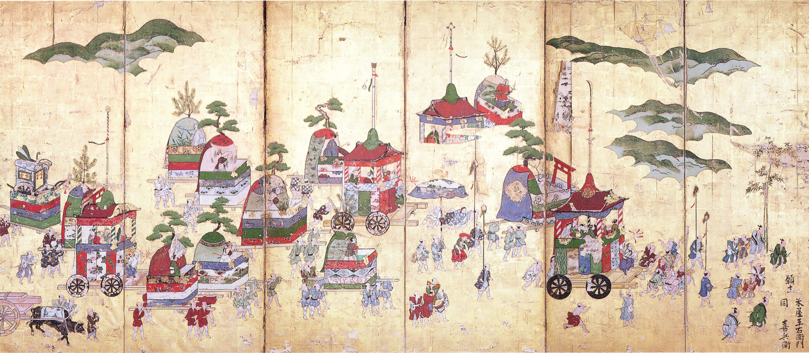

社宝
歴史を伝える貴重な文化財
Important Cultural Property
暁の鏡 （あかつきのかがみ）
1.jpg)
径19cm 高1.6cm。当神社を代表する社宝であり、伝説によれば第四十五代聖武天皇や第五十三代淳和天皇の崇敬厚く、雨を降らせて干害を救ったと伝えられています。
「暁」の名が示す通り、闇を照らし希望や始まりを象徴する鏡として、古来より大切に保管されてきました。その神秘的な輝きは、今もなお見る者を魅了します。

祇園祭礼図山鉾絵金屏風
江戸時代十八世紀
江戸時代中期の京都・祇園祭の様子が鮮やかに描かれており、当時の祭礼の熱気や山鉾の装飾を今に伝える貴重な資料です。 六曲一双の壮大なスケールで描かれた金屏風は、当神社の最も重要な社宝の一つです。
その他の主な社宝
- 後西天皇（第百十代）筆書の掛軸
- 土佐光起筆 天満宮像
- 狩野元信筆 渡唐天人像（江戸時代十七世紀）
- 三条小鍛治宗近作の剣
- 狩野派の法眼春ト筆の額
- 森祖仙筆 絵馬